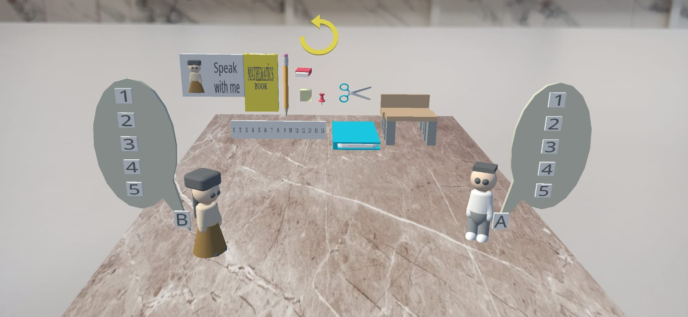
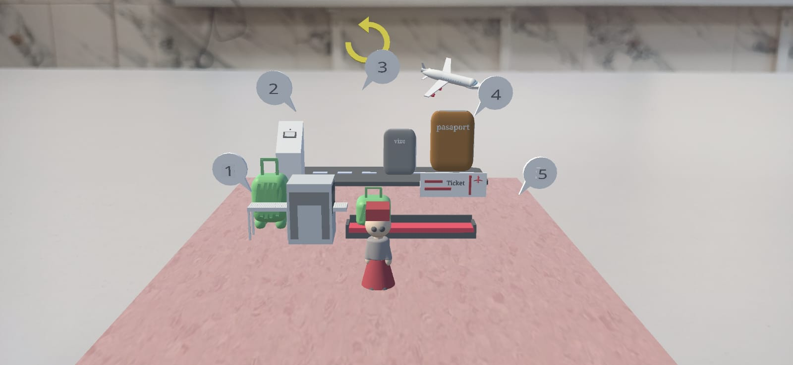
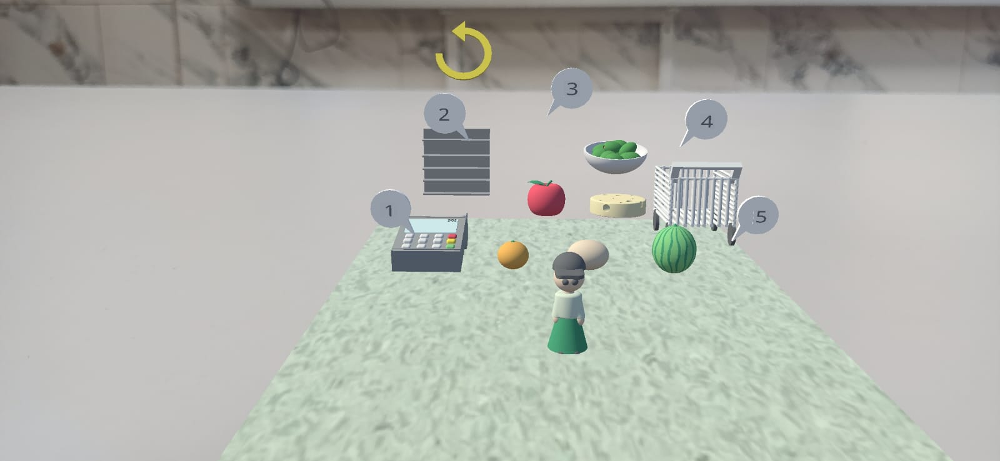
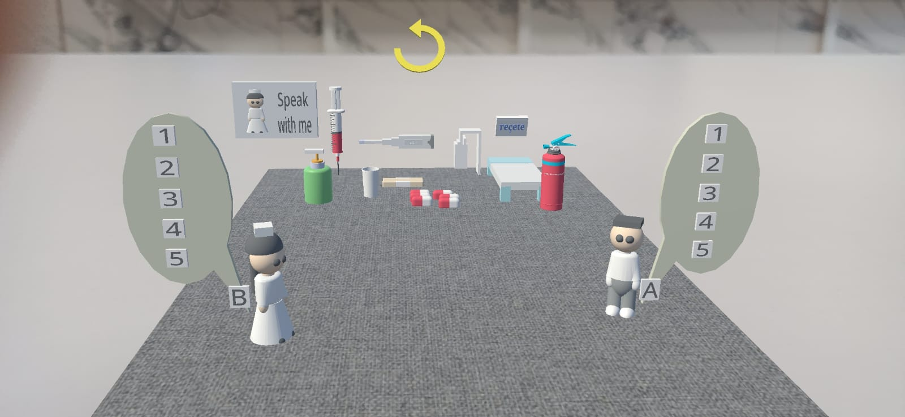
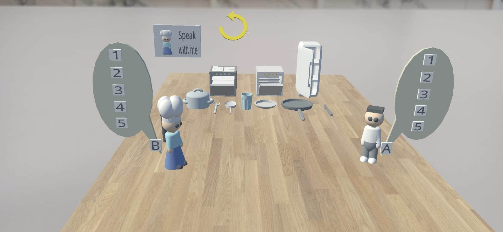

Proje Özeti
StoryAR, ortaokul düzeyindeki öğrencilerin günlük yaşamda ihtiyaç duyabilecekleri İngilizce konuşma becerilerini desteklemek için geliştirilmiş senaryo tabanlı bir mobil uygulamadır. Geleneksel yöntemlerin sınırlılıklarını aşarak öğrencilere güvenli ve etkileşimli bir pratik ortamı sunar.
Uygulama İçi Görseller

Okul Sahnesi

Havaalanı Sahnesi

Market Sahnesi

Hastane Sahnesi

Otel Sahnesi
Uygulamayı Deneyimleyin
APK İndir
QR kodu taratarak indirme işlemini başlatabilirsiniz.
Google Play Store
Çok Yakında!